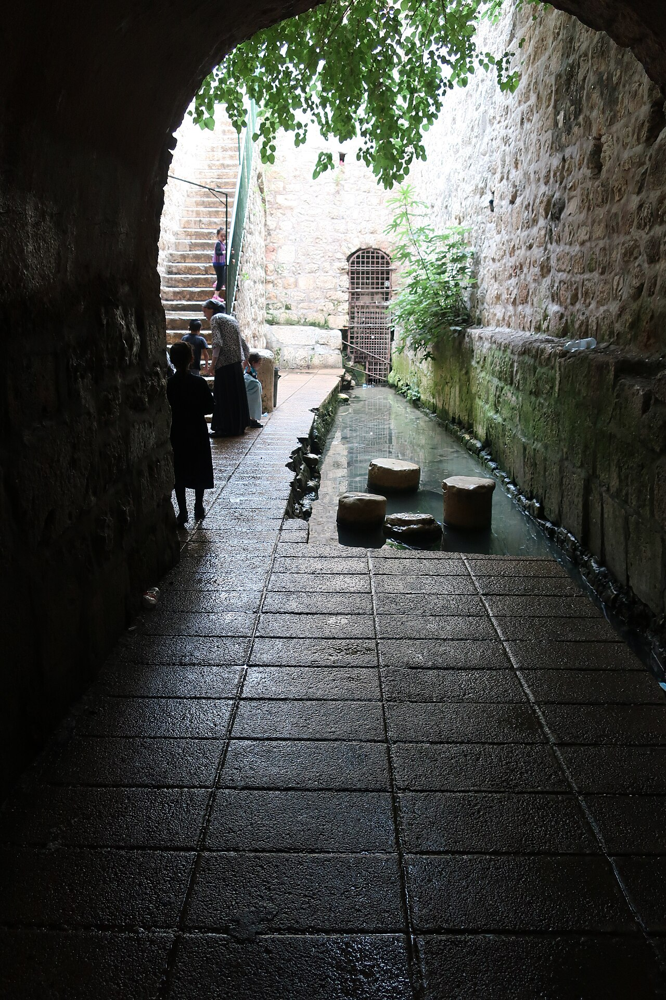

Pool of Siloam

- Find Name
- Pool of Siloam
- Historical Period
- Roman
- Artifact Date
- c. 1st century BC - AD 70 (Second Temple steps)
- Date Discovered
- 2004
- Discovery Location
- City of David, Jerusalem, Israel
- Current Location
- In situ, City of David, Jerusalem, Israel
- Timeline Era
- Life of Christ
- Description
- The monumental stepped pool at the end of Hezekiah's Tunnel, rediscovered in 2004 when workers repairing a sewer line uncovered its broad stone steps. Excavation revealed a large Second Temple-period pool used by pilgrims ascending to the Temple.
- Biblical Significance
- In John 9, Jesus sends a man born blind to wash in Siloam, and he comes back seeing. Standing on these very steps, readers can trace that journey of faith, and remember that the One who opened blind eyes still opens ours to hope.
- Evidence Class
- Direct
- Interpretations
- Scholars agree the stepped pool uncovered in 2004 is the Second Temple Pool of Siloam of John 9; its Hasmonean and Herodian phases show a large pilgrim facility, not a small spring.
- Scripture Illuminated
- Related People
- Related Books
- Related Places
Awaiting Review Not yet checked against scholarly sources. Treat its claims as provisional until this entry is reviewed. About verification
Last reviewed: not yet reviewed